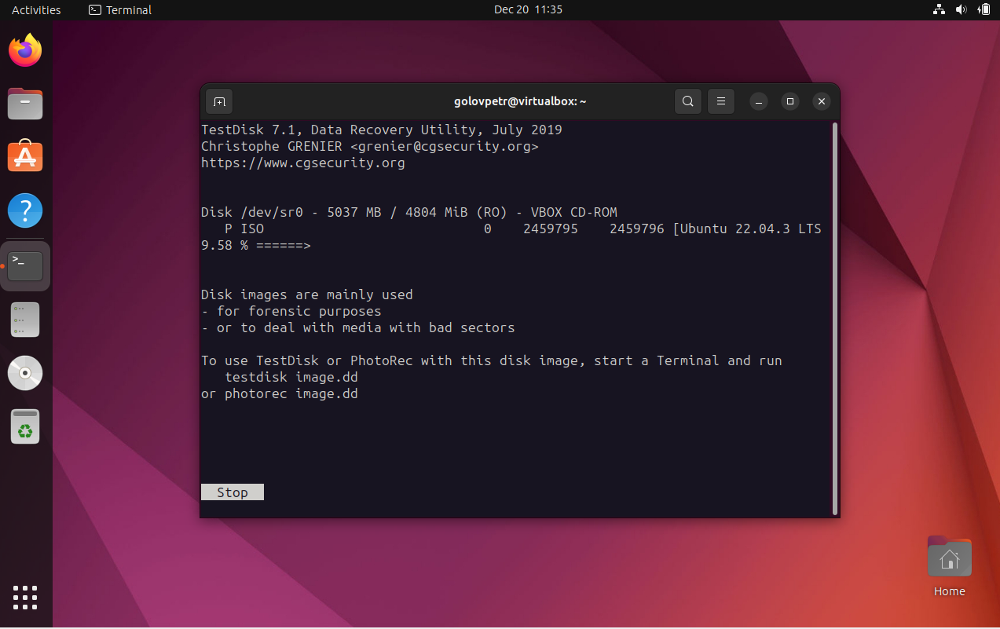
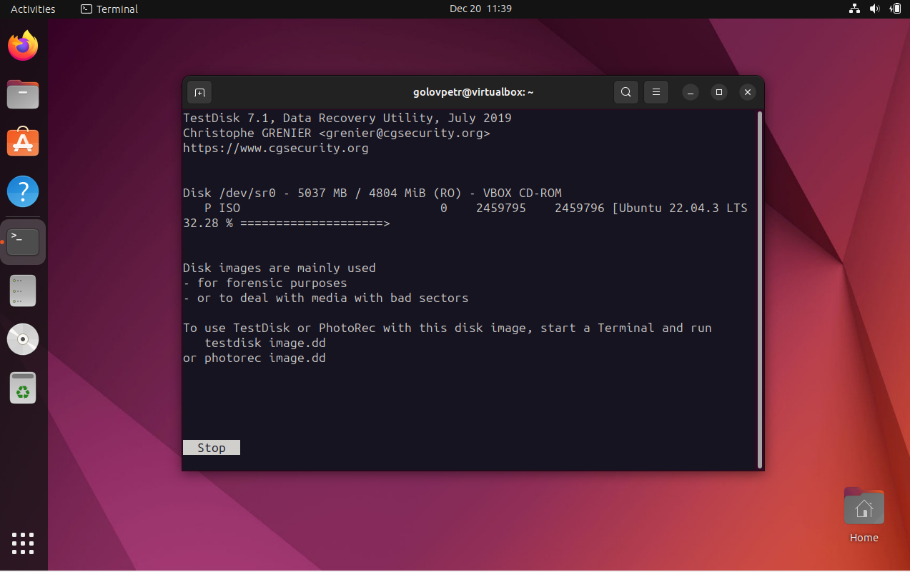

TestDisk разработан и поддерживается Гильермом Делфинем (Gilles Delabarde), который также стоит за другим известным инструментом восстановления данных, PhotoRec. Оба инструмента предоставляются бесплатно и являются открытым программным обеспечением, распространяемым на условиях лицензии GNU General Public License (GPL). Это означает, что пользователи могут свободно использовать, изменять и распространять программу в соответствии с условиями этой лицензии.
Ссылка на сайт прозводителя: ссылка
Сбор информации о файловых системах:
TestDisk предоставляет детальную информацию о файловых системах, позволяя пользователям анализировать и восстанавливать данные, даже при сложных структурах файлов.
Восстановление файлов на различных носителях:
Программа не ограничивается восстановлением данных только на жестких дисках и может работать с различными носителями, включая USB-накопители, карты памяти и другие устройства.
Интеграция с PhotoRec:
TestDisk интегрирован с другим инструментом восстановления данных, PhotoRec, что обеспечивает дополнительные возможности по восстановлению удаленных файлов и восстановлению данных с различных носителей.
Создание снапшота диска
Добавление новой информации в снапшот
TestDisk представляет собой мощный инструмент для восстановления данных и разделов, обладающий широким спектром функциональных возможностей. Для домашних пользователей он предоставляет интуитивно понятный графический интерфейс, который обеспечивает простоту использования даже для тех, кто не обладает глубокими знаниями в области восстановления данных. Возможность восстановления удаленных файлов, разделов и работа с различными файловыми системами делает TestDisk незаменимым инструментом при потере данных на домашнем компьютере.
корпоративной среде TestDisk остается эффективным средством обеспечения бесперебойной работы системы. Способность восстанавливать загрузочные сектора, работать с различными файловыми системами и проводить диагностику состояния диска делают его надежным инструментом для восстановления данных в корпоративном окружении. Возможность работы из командной строки придает гибкость в интеграции с автоматизированными процессами обслуживания систем. Таким образом, TestDisk предоставляет полезные функциональные возможности для обеспечения безопасности данных и стабильности работы как для домашних, так и для корпоративных пользователей.